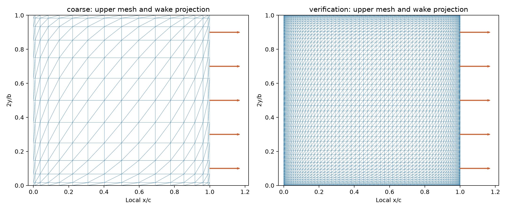
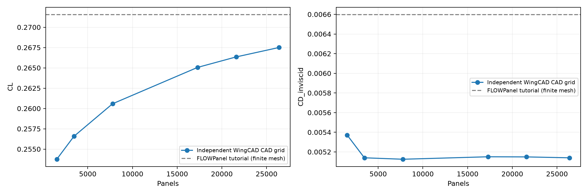
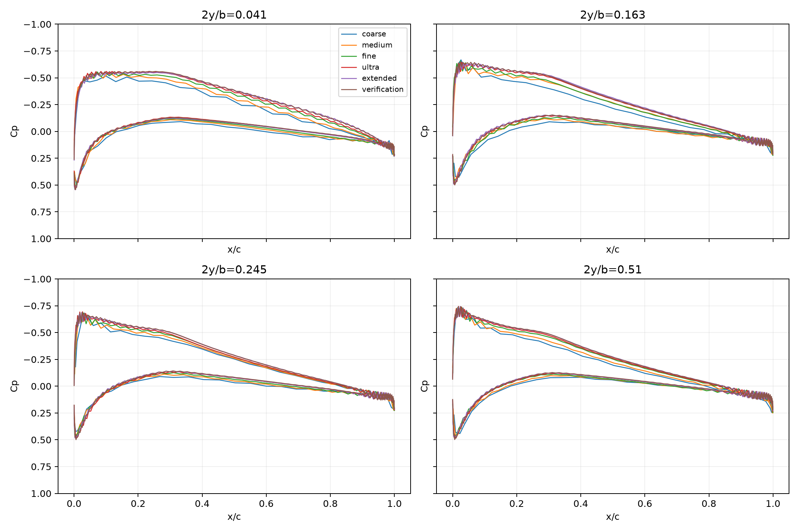

Engineering criteria passed: True. Same WingCAD RAE101 BRep, dimensions and conditions; cosine spacing in chord and semispan. No reference nodes or profile interpolant used.
Not a full convergence claim. The final spacing increments are smaller than the initial ones. CL still trends with refinement. In the finest mesh, panels with Cp below -10 contribute -10.34% of the net inviscid CD (signed). Tip pressures remain unresolved; small adjacent coefficient changes do not establish asymptotic accuracy.
| Mesh | Panels | CL | CD inviscid | Raw Cp minimum | Panels Cp < −10 |
|---|---|---|---|---|---|
| coarse | 1536 | 0.2537512 | 0.0053707 | -1.37 | 0 |
| medium | 3456 | 0.2565713 | 0.0051399 | -2.91 | 0 |
| fine | 7776 | 0.2605803 | 0.0051252 | -5.95 | 0 |
| ultra | 17280 | 0.2650540 | 0.0051503 | -12 | 8 |
| extended | 21600 | 0.2663464 | 0.0051490 | -17.1 | 24 |
| verification | 26400 | 0.2675078 | 0.0051399 | -23.1 | 40 |
Two successive refinements must pass CL ≤1%, CD ≤5%, Cp RMS ≤0.02 and Cp 95th-percentile difference ≤0.05. Cp uses the raw constant value of the triangle containing each evaluation point on the fixed interior domain x/c=0.01…0.99, |2y/b|=0.05…0.95. Tip, root and edge singular regions are excluded from this local criterion; this is not a claim of pointwise convergence there.
| Refinement | CL change % | CD change % | Cp RMS | Cp p95 | Pass |
|---|---|---|---|---|---|
| coarse → medium | 1.1113 | 4.2964 | 0.027407 | 0.057114 | False |
| medium → fine | 1.5625 | 0.28754 | 0.024165 | 0.048526 | False |
| fine → ultra | 1.7168 | 0.49101 | 0.022225 | 0.044227 | False |
| ultra → extended | 0.48757 | 0.026626 | 0.016781 | 0.034441 | True |
| extended → verification | 0.43607 | 0.17677 | 0.016168 | 0.035901 | True |
Wake segments are paired from actual CAD mesh connectivity with FLOWPanel's reverse boundary orientation, one wake per upper/lower TE edge pair, directions aligned with freestream. Upper TE panels precede the correct adjacent structured triangles. The original unstructured results remain preserved; this changes the panel distribution, not the CAD. Agreement with experimental or reference coefficients is not an acceptance criterion.
The connected case shares root nodes, avoiding an artificial open boundary between half-wings. In the corrected pressure runs, a weighted least-squares tangent gradient uses two edge-neighbour rings, excludes cross-wake stencils, and is invariant to cell numbering. Only actual paired TE panels receive the Kutta pressure correction; forces are integrated from that same Cp without a second index-based correction. Raw singular tip values are retained above.
Full numerical audit · Raw pressure cuts


